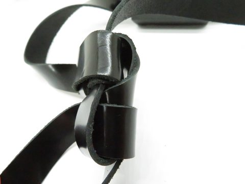
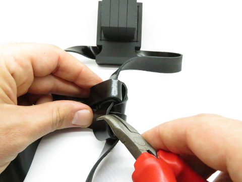
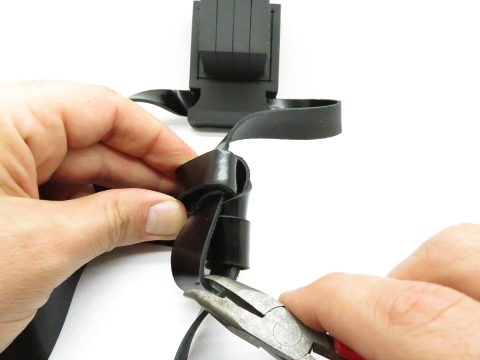
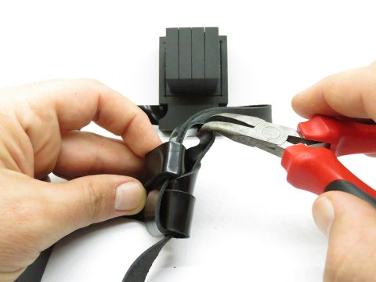
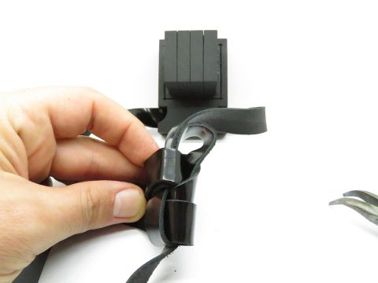
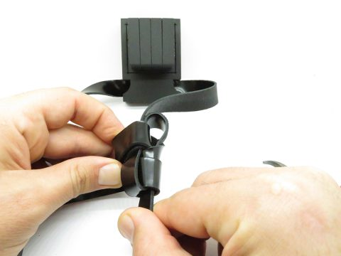
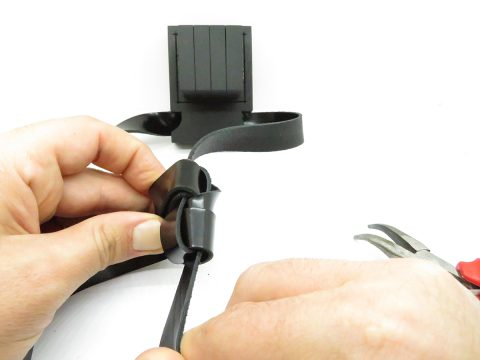

מאמר הקטנת והגדלת קשר הראש
תקציר
הסבר מפורט להקטנת והגדלת קשר תפילין של ראש.
מתוך המאמר: אמר לי פעם תלמיד שלמד אצלנו במכון, שדווקא בגלל זה הוא נרשם לקורס הכנסת פרשיות, כיון שהוא בעל חזות דתית ויודע ספר, מבקשים ממנו פעמים רבות במקום מגוריו בתפילה ובבית הכנסת לסדר להם את קשר התפילין, אולם הוא נאלץ לצערו להשיבם ריקם.
לסייע ליהודים צדיקים המתפללים יום יום בתפילין, אך התפילין שלהם לא מונחות במקומם הנכון, זהו זיכוי הרבים כפשוטו… החלטתי שאני נרשם לקורס…







תוכן המאמר
הקטנת והגדלת קשר הראש
כל אדם שמתפלל יום יום בתפילין, נתקל לא פעם בבעיה שהוא רוצה לקצר ולהאריך לעצמו את קשר התפילין של ראש, או שנתבקש על ידי אדם אחר לסדר לו.
אמר לי פעם תלמיד שלמד אצלנו, שדווקא בגלל זה הוא נרשם לקורס הכנסת פרשיות, כיון שהוא בעל חזות דתית ויודע ספר, מבקשים ממנו פעמים רבות במקום מגוריו בתפילה ובבית הכנסת לסדר להם את קשר התפילין, אולם הוא נאלץ לצערו להשיבם ריקם, לסייע ליהודים צדיקים המתפללים יום יום בתפילין, אך התפילין שלהם לא מונחות במקומם הנכון, זהו זיכוי הרבים כפשוטו… החלטתי שאני נרשם לקורס…
נכתוב בזה מעט מהמקורות, ונצרף הדרכה נכונה להקטנת והגדלת הקשר. ללימוד הקשר לחץ כאן.
לקצר ולהאריך
וכתב [1] הרב כף החיים, בשם ספרים וסופרים, [2]'שראוי ליראי השם ולחושבי שמו לעמוד בפרץ וליקח התפילין ולקצר הקשר, באופן שיהיו מונחים במקומן'.
עוד כתב, שבספר סולת בלולה קרא תוכחת מגולה לזה, וכתב: שכל גדול העיר הירא והחרד לדבר ה' ישגיח על זה לשלוח תמיד ממונים מבית לבית, לראות שתהיה הקציצה והקשר מונחים במקומן.
ואם הרואה אינו יודע לעשות קשר התפילין כדי לקצר לו הקשר ויהיו מונחים במקומם, לפחות יאמר לבעל התפילין שהוא ילך אצל האומן ויתקן, וגדול שכר המזכה, עכת"ד.
להדרכות מפורטות וקשרי תפילין נוספים, ראה בספר יסודות התפילין, לרכישה: בחנות.
———